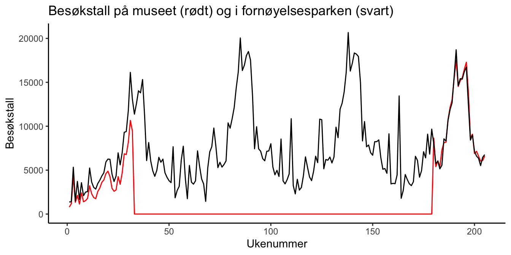

7.3 Dataøving 3
7.3.1 Oppgave 1: Interaktiv øvelse
Før vi tar fatt på dataanalysen begynner vi som vanlig med litt R-trening i swirl. Har du allerede installert pakken swirl (skriv install.packages("swirl") i konsoll hvis ikke) starter du opp swirl med å skrive følgende i konsollen:
library(swirl)
install_course("Regression_Models") # legger til nytt kursmateriale om regresjon
swirl()Du vil i starten bli bedt om å skrive inn ditt navn. Hvis du bruker samme navn som tidligere får du kanskje tilbud om å starte opp igjen der du slapp, men da kan du bare velge det nederste valget ‘No. Let me start something new’. Du velger så alternativet ‘Regression Models’ hvor du får se alle modulene dette kurset inneholder. I denne øvingen skal du prøve deg på modul modul 1 ‘Introduction’. Her vil du lære litt om hvordan du kan bruke R til å gjøre en regresjonsanalyse ved hjelp av et treningsdatasett. Noen av kommandoene som gjennomgås i denne modulen vil komme til nytte senere i datalabben.
Husk at det helt til høyre vil står hvor langt du har kommet i prosent. Står du helt fast med et punkt kan du skrive skip() for å hoppe over dette punktet. Når du har fullført en modul blir du spurt om du vil motta ‘credit’ for å ha fullført modulen. Her kan du svare nei. Ønsker du å avbryte underveis skriver du bye(). Skriver du inn det samme navnet når du eventuelt starter swirl igjen kan du fortsette der du slapp. Husk å avslutt swirl (esc) før du begynner på del to av øvingen. Lykke til!
7.3.2 Oppgave 2: Regresjonsanalyse
Et rock-and-roll museum åpnet i Atlanta i 1990. Museet lå i en sentral del av byen i nærheten av mange ulike butikker. Mot slutten av juli måned i 1992 startet en stor brann i en av disse butikkene som ødela hele kvartalet, inkludert museet. Heldigvis var museet forsikret, både mot selve brannskadene, og mot tapte billettinntekter i gjennoppbyggingsperioden.
Vanligvis vil et forsikringsselskap beregne erstatningsbeløpet under antakelsen om at besøkstallene i gjenoppbyggingsperioden ville vært på samme nivå som besøkstallene i tiden før brannen. I dette tilfellet mente derimot eierne av museet at besøkstallene var økende, slik at de reelt sett hadde krav på et større erstatningsbeløp. Argumentet var basert på besøkstallene til en fornøyelsespark like ved. Fornøyelsesparken åpnet i desember 1991, slik at museet og parken opererte sammen i de siste fire ukene av 1991, og de første 28 ukene i 1992 før brannen ødela museet.
Museet åpnet igjen i april 1995, men var da betydelig større enn det var opprinnelig. Data for besøkstall for museet og fornøyelsesparken finner vi i regnearket C16-01.xlsx. Som i de to foregående dataøvingene legger du denne filen i en mappe på maskinen din, og oppretter et tomt R-script der du lagrer koden for denne oppgaven.
Oppgave 2.1: Kikk raskt på datasettet i Excel eller tilsvarende. Du ser at det er tre kolonner, en som angir ukenummer (Week, teller fra 1 til 205), en som angir ukentlig besøkstall på museet (Museum) og en som angir ukentlig besøkstall i fornøyelsesparken (A-Park). Legg merke til at besøkstallet i museet er null fra og med uke 33, til og med uke 179, som er perioden fra brannen til nyåpning.
Oppgave 2.2: Last så datasettet inn i R som før ved hjelp av read_excel()-funksjonen. Gi det et passelig navn (f.eks visits), og sjekk raskt at det har gått bra ved å taste inn datanavnet i konsollen. Da skal det se omtrent slik ut:
visits## # A tibble: 205 x 3
## Week Museum `A-Park`
## <dbl> <dbl> <dbl>
## 1 1 787 1379
## 2 2 1179 1396
## 3 3 4225 5332
## 4 4 1336 1477
## 5 5 2122 3717
## 6 6 1136 1663
## 7 7 2413 3573
## 8 8 1399 2086
## 9 9 1528 2503
## 10 10 1788 2553
## # ... with 195 more rowsLegg merke til følgende:
- Observasjonene ser ut til å være de samme som vi så da vi kikket på selve regnearket. Det er alltid en god vane å forsikre seg om at R har lest inn datasettet på riktig måte.
- Et av variabelnavnene har fått noen rare tødler rundt seg. Grunnen til det er at
A-parkinneholder en bindestrek, så for at R ikke skal tolke det tegnet som et minustegn (og dermed gi oss et mareritt med feilmeldinger), må vi alltid bruke disse tødlene når vi refererer til denne variabelen. (På tastaturet som forfatteren av disse ord skriver på, er detShift +tasten til venstre forBackspace.
Oppgave 2.3: Før vi går videre, må vi få et bedre begrep om problemet ved å kikke grafisk på observasjonene. La oss plotte observasjonene i et linjeplott for å se hvordan de utvikler seg over tid, ved å ha ukenummer på \(x\)-aksen og besøkstall på \(y\)-aksen. Vi kan lage et enkelt plott for besøkstall for museet ved å skrive
# Laster først ggplot-pakken (det trenger vi bare gjøre en gang i skriptet)
library(ggplot2)
# Lager et enkelt linjeplott:
ggplot(visits, aes(x = Week, y = Museum)) +
geom_line()
Du kan legge til besøkstall for fornøyelsesparken ved å plusse på en ny linje med geom_line(), men da må du spesifisere y-variabelen på nytt. Hele plottekommandoen blir da:
ggplot(visits, aes(x = Week, y = Museum)) +
geom_line() +
geom_line(aes(y = `A-Park`))Vi ser at det er en sterk sammenheng mellom besøkstallene til museet og parken, spesielt etter gjenåpningen i 1995, og det skal vi utnytte når vi senere skal beregne erstatningssummen.
Oppgave 2.4: Juster på argumentene i geom_line()-funskjonene, og legg til flere “lag” på samme måte som vi gjorde for å pynte på figuren i oppgave 3 i kapittel 1.11 (det er 100% lov å Google). Dette ser bedre ut:

Oppgave 2.5: La oss nå ta utgangspunkt i forsikringsselskapets påstand: besøkstallet i perioden der museet er stengt skal beregnes ved hjelp av observasjonene før brannen. Vi estimerer parametrene i en enkel regresjonsmodell
\[y_i = \beta_0 + \beta_1x_i + \epsilon,\]
der responsvariabelen \(y_i\) er besøkstallet på museet på dag nr. i, og \(x_i\) er besøkstallet i fornøyelsesparken samme dag. Datasettet vi skal bruke er altså de 32 første radene i datasettet visits. Da kan vi enten lage en ny tabell som består av de 32 første radene (for eksempel ved hjelp av filter(Week <= 32)), eller så kan vi bruket argumentet subset i lm()-funkesjonen til å spesifisere hvilke observasjoner som skal brukes for å estimere modellen:
reg1 <- lm(Museum ~ `A-Park`, data = visits, subset = 1:32)Oppgave 2.6: Pakken stargazer inneholder funksjoner for å lage pene regesjonstabeller automatisk fra regresjonsobjekter i R. Pakken må installeres og lastes på vanlig måte:
install.packages("stargazer")
library(stargazer)Inne i stargazer-pakken er det en funksjon som også heter stargazer(). Hvis du ikke har sett den brukt før (f.eks i forelesning), kan du lese mer om den ved hjelp av hjelpefunksjonen: ?stargazer. Bruk så stargazer() til å lage følgende regresjonsutskrift (hint: bruk argumentet type = "text"):
===============================================
Dependent variable:
---------------------------
Museum
-----------------------------------------------
`A-Park` 0.693***
(0.018)
Constant 16.229
(114.695)
-----------------------------------------------
Observations 32
R2 0.979
Adjusted R2 0.979
Residual Std. Error 355.588 (df = 30)
F Statistic 1,424.094*** (df = 1; 30)
===============================================
Note: *p<0.1; **p<0.05; ***p<0.01Oppgave 2.7: Lag tre diagnoseplott etter mal som er gitt i forelesningsnotatene: Et som viser residualene i regresjonsmodellen i et spredningsdiagram, et QQ-plott, og et histogram. Kan du gjøre en grov vurdering om hvorvidt forutsetningene for lineær regresjon er oppfylt?
Oppgave 2.8: Bruk denne regresjonsmodellen til å beregne hva besøkstallet hadde vært dersom museet hadde vært åpent som vanlig. Dette kan vi gjøre ved å bruke predict()-funksjonen. Følg oppskriften under nå, så skal du prøve å gjøre det selv etterpå.
# Vi lager et nytt datasett bestående av de ukene der museet var stengt:
visits_pred <-
visits %>%
filter(Museum == 0) %>%
select("Week", "A-Park")
# Bruker predict()-funksjonen til å predikere tilhørende y'er:
predicted_visits1 <- predict(reg1, newdata = visits_pred)
# Til slutt legger vi til de predikerte verdiene som en ny kolonne i visits_pred:
visits_pred$predikert1 <- predicted_visits1De predikerte besøkstallene er nå lagret som kolonne predicted1 i datasettet visits_pred.
Oppgave 2.9 For å få bedre greie på hvordan prediksjonene egentlig ser ut kan vi legge dem til figuren vår fra over. La oss lage en blå stiplet linje, og det kan vi gjøre med å legge til enda et kall til geom_lines(). Denne gangen må vi bruke flere argumenter:
- Vi må bruke argumentet
datatil å si at tallene vi skal plotte for den nye linjen nå ligger i datasettetvisits_pred, og ikkevisits. - Vi må bruke argumentet
colourtil å fortelle hvilken farge vi skal ha på linjen. - Vi må bruke argumentet
linetypetil å fortelle at vi vil ha en stiplet linje.
Ta for deg figuren du lagde i oppgave 2.4, og legg til følgende linjer (husk å få med en + mellom hvert lag):
geom_line(aes(x = Week, y = predikert1),
data = visits_pred,
colour = "blue",
linetype = "dashed")Da blir figuren min seende slik ut:
Oppgave 2.10: Kommenter kort regresjonsutskriften fra oppgave 2.6 og figuren fra oppgave 2.9. Ser det fornuftig ut?
Oppgave 2.11: Se på saken heller fra museets side. De mener at det er besøkstallene fra etter åpningen i 2005 som skal brukes til å estimere regresjonsmodellen. Det er lett å forstå hvorfor de ønsker det, for da ser det ut som at det er omtrent like mange besøkende på museet som i fornøyelsesparken.
Repeter oppgave 2.5, men nå bruker du altså besøkstallene fra etter åpningen til å estimere regresjonskoeffisientene. Hint 1: Det eneste du må endre er hva som skal inn i subset-argumentet. Hint 2: Stigningstallet i den nye modellen skal være 0.97.
Oppgave 2.12: Beregn hvilke besøkstall museet hadde hatt i perioden det var stengt ved å legge til grunn den nye regresjonsmodellen etter mønster fra oppgave 2.8, og legg dem inn i figuren etter mønster fra oppgave 2.9. Figuren blir skal da se omtrent slik ut hvis vi bruker en finn grønnfarge (forestgreen) til den siste linjen:
Oppgave 2.13: Når vi ser hvor tett de to besøkstallene beveger seg etter nyåpningen er det ikke rart at de beregnede besøkstallene basert på den nye modellen (markert i grønt over) følger observasjoenen fra fornøyelsesparken.
Anta at hver billett til museet koster $6.99. Hvor stor er differansen mellom erstatningskravet til museet og tilbudet til forsikringsselskapet?
Oppgave 2.14 (Diskusjon): Det er ganske stor forskjell mellom tilbud og krav, men hvis vi tenker oss om skjønner vi fort at begger parter befinner seg i en klassisk catch-22. Hvis den ene partens argument fører til en utbetaling som er for stor eller for liten fordi de tar utgangspunkt i slutten eller starten på en stigende utvikling, må nødvendigvis det motsatte standpunkt også være galt av nøyaktig samme grunn. Kan du foreslå et kompromiss?